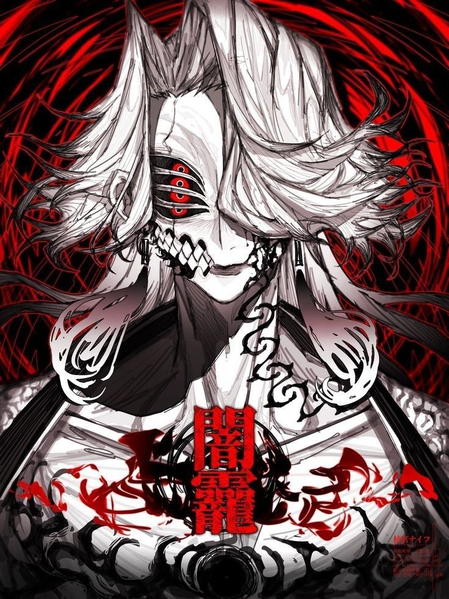
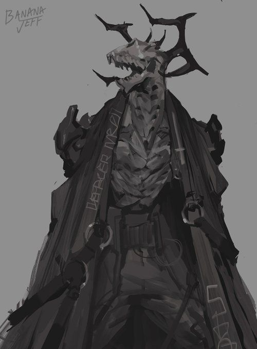
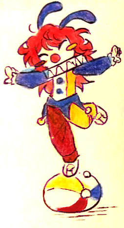
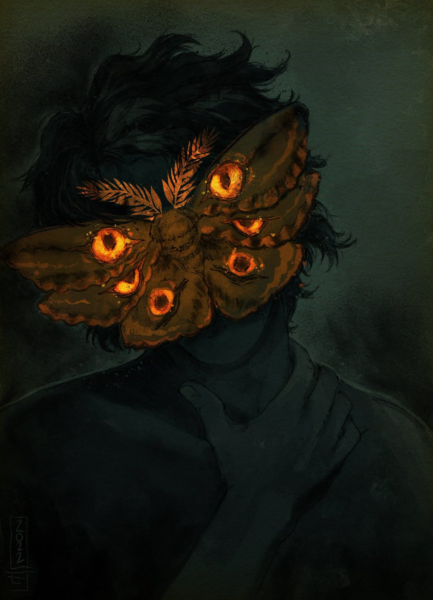

OS CINCO
NO CENTRO
Não são cinco fichas iguais. Cada sacerdote altera o próprio arquivo. A página muda de linguagem, ritmo e cor conforme a Ordem — como se o registro tivesse sido contaminado por quem descreve.

REGISTRO VISUAL · M-001MOR
GANA
a primeira voz · a presença que chega antes da decisão
Morgana não precisa dominar uma sala. Basta reorganizar aquilo que cada pessoa acredita ter escolhido sozinha.
Influência, diplomacia, leitura social e controle de narrativas.
Precisão. Tempo é recurso; pressa é ruído.
Você pode sair convencido de que a ideia sempre foi sua.
Origem e idade permanecem deliberadamente opacas.

DURA
ASTAROTH
O medo não está no valor cobrado. Está no espaço entre a escolha e a consequência — quando você sabe que algo virá, mas ainda não sabe o quê.
Não abandona uma missão depois de aceitá-la.
Lê pessoas como outros leem contratos.
Favores criam consequências, não equivalências simples.
O silêncio dele não é falta de resposta. É cálculo.

CARAMELA
CARAMELA!
recrutamento, acolhimento, celebração e o estranho talento de fazer o peso parecer suportável.
O que parece:
uma festa, uma conversa, um doce colocado ao lado de alguém que precisava dele.
O que é:
uma das formas mais eficientes de transformar estranhos em pessoas que desejam ficar.
BAAL
Ele prefere conhecer o mundo sem permitir que o mundo o conheça. A Solidão, para Baal, não é ausência: é distância suficiente para enxergar o desenho inteiro.
“Se você percebeu que estava sendo observado, provavelmente ele já terminou.”
NÃO CATALOGADA
BELZEBU
A PURA · SACERDOTE DO SILÊNCIO
Ele não procura a resposta que encerra um caso mais rápido. Procura aquela que ainda permanece de pé depois que todas as certezas fáceis foram desmontadas.
“Quando achar que já entendeu, escute mais uma vez.”
